Michael Matloob 11 July 2016
Interested in contributing to the Go Programming Language open source project, but don’t know where to start? Come learn how you can get involved and find something to work on.
If you’re already contributing, come learn how to more effectively review CLs and help make the contribution process smoother for others.
Hi!
Welcome to “CONTRIBUTING: The Talk”! My goal for this talk is to help those of you who want to contribute to the Go Programming Language Open Source project to get involved and start contributing. We’ve got some stuff for veteran contributors too near the end.

This is the talk I wish I’d seen when I started contributing to the Go project.
When I started contributing, I didn’t how to start. I took on a linker bug that I didn’t know how to fix, and I got really intimidated by the comments on the changes that I sent out. So intimidated that I took a break for more than a year.
The second time around, I was better equipped. I found more a suitable task to work on, a tool to move go packages to a new path in a source tree. And as I made changes, I eventually figured out some of the rules and conventions in contributing. I realized that it was okay to receive critical comments on my changes -- the reviewers weren’t out to get me, the comments were just their way of teaching me how to contribute. And I’ve grown comfortable with some parts of the code base, such as our tools and the regular expressions package.
This talk is an attempt to help you get started in becoming a contributor. Hopefully it can save you some time on your path…
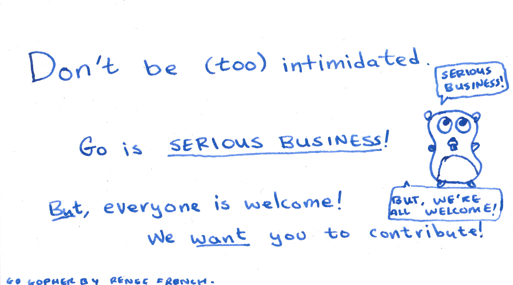
Contributing to Go may seem intimidating at times. And it is intimidating! It’s important code that a lot of people depend on. Even the core developers on the project are mindful of making only the right changes and often have their proposals rejected. The Go project is not an experimental project anymore -- it’s serious business for a lot of people.
But you shouldn’t be too intimidated! There are lots of ways to get involved for every level of experience, and I’ll show you a couple of options in this talk.
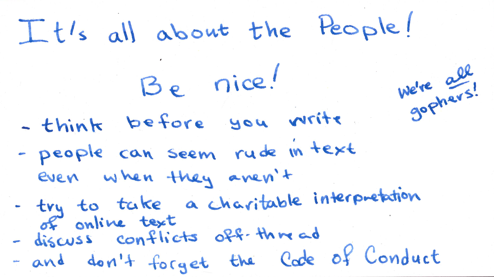
We shouldn’t forget that as contributors, we’re not just working with code, but also with people. It goes without saying that we follow the Code of Conduct for contributors, but there’s more than just following the rules -- we should be nice to each other!
There’s no non-verbal context when communicating on our mailing lists, so consider how your words might seem to someone who can’t see you. There are a lot of times when we’ll have to say no to a proposal or a change. If you’re already a contributor, and it’s your responsibility to say no to your fellow contributor, you should be careful to communicate that it’s not personal, and you still welcome them in our community.
Conversely, when you’re getting feedback and constructive criticism about your work from other members in the community, it’s easy to read it in a negative subtext. Sometimes I read comments from people that say to “change X” and I might still read it as “change X, stupid!” but that’s not what they said. They just want Go to be the best it can be, just like I do. So don’t get scared if you see your changelists bleeding with red ink -- that’s a good thing!
When you’re a beginner, those early rounds of review are part of the learning process. As you anticipate our patterns, edits to later CLs become lighter. And the whole time, our code’s getting better too!
With all this said, it’s good to keep in mind that everyone involved in Go is very, very busy, and since we’re human we sometimes don’t take enough time to communicate carefully.
When that happens, give the reviewer the benefit of the doubt. If you’re upset by it, reach out to them off list to clear the air.
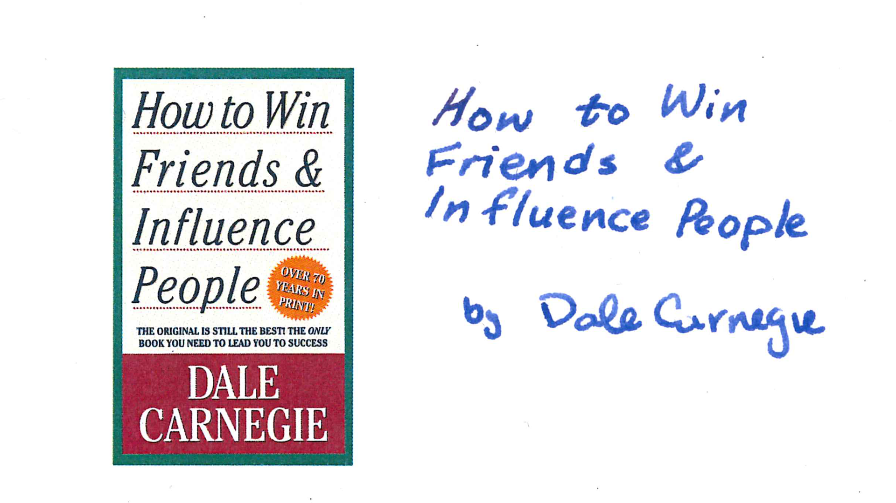
On a personal note, I’ve found the book “How to win friends and influence people” to be really useful for this ‘communication’ thing. It’s full of a lot of common-sense that’s really easy to forget sometimes…

Alright. The rest of the talk is structured as follows. First, I’ll go over the components in the Go project, and the tools and resources you’ll be using as a contributor.
I’ll then talk about some ways you can get started as a contributor, and give a demo of making a code contribution.
I’ll finish with tips and advice for more complex contributors.

Let’s take a look at the components of the go project.

The core repository contains the compiler and runtime, standard library and docs for Go. It’s basically the stuff that’s distributed by the Go installer.

The subrepos contain packages and other tools that have been developed as part of the project. For instance, ‘tools’ contains tools such as guru and goimports, and ‘mobile’ contains support for developing Go apps that run on iOS or android.

Now, let’s take a look at the tools.
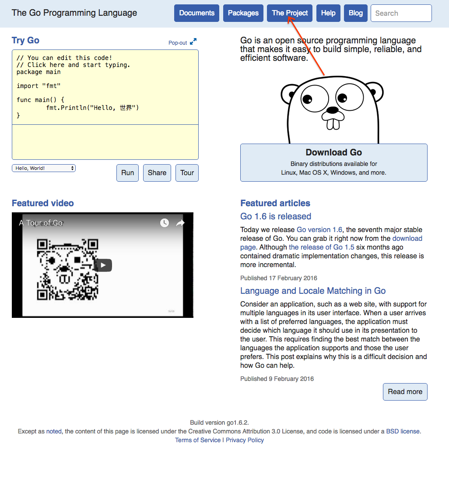
golang.org has a number of resources for contributors. Of particular interest to contributors we have…
“The Go Project” page, which links to a number of resources about the project, especially

the “Contribution Guidelines”. The contribution guidelines contain a lot of the contribution instructions in this talk. You should definitely take a look if you’re interested in contributing!
Don’t worry about everything up here, I’ll go over all of this later in the talk.
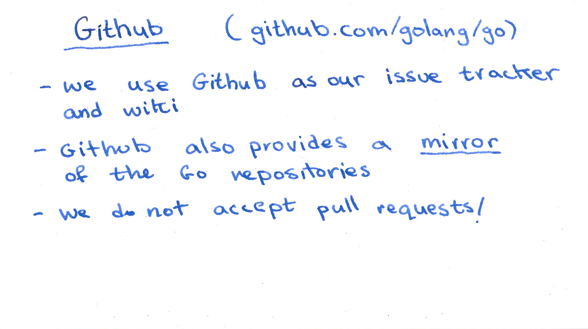
We use Github primarisy for its issue tracker. It also hosts our wiki.
This is what the go github page looks like.

But we don’t accept pull requests to github.
It’s not our primary Git repository, it’s just a mirror.
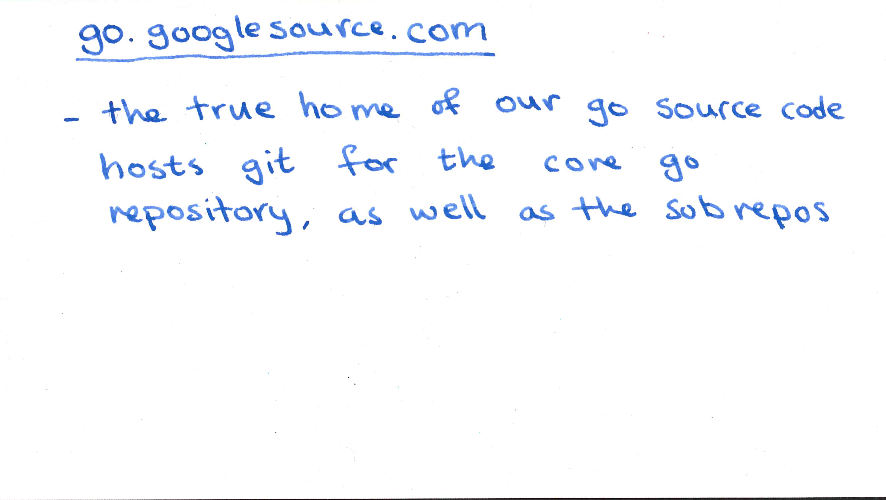
go.googlesource.com is the official source for the Go source. Both the go core repository and the subrepositories are hosted here. You can browse the git log and branches and download the repositories here too.
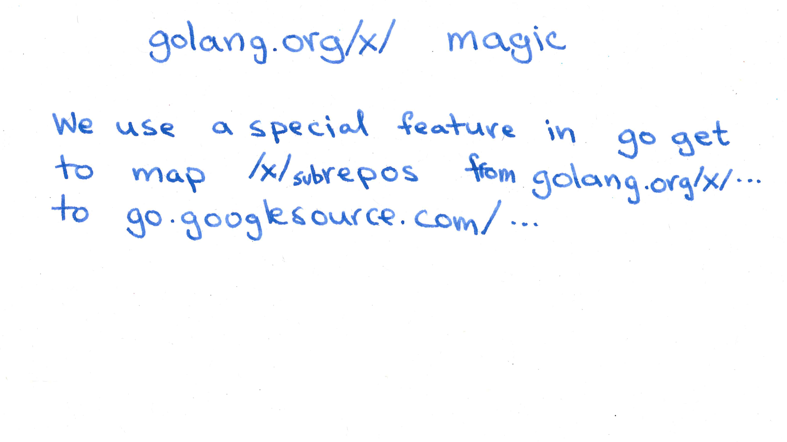
The subrepos, which have import paths that start with golang.org/x/ are also stored on googlesource. We’ve got some magic set up that redirects go get to the appropriate git repos.

And we use a different codereview tool also. It’s called Gerrit.
This is where new code contributors add to the go project goes through a process of peer review.
For now let’s take a look at what it looks like

If we click on one of the entries, we get the page for that entry.
Gerrit and other code review tools allow us to review code by posting comments and assigning scores. We can do both by clicking on the ‘reply’ button.
Gerrit has a notion of scores…

A zero score is neutral.

A minus two means that the reviewer thinks there’s a significant problem with the change that needs to be fixed. It blocks a change from being submitted, or merged into our git repo until it’s retracted.

A minus one means the reviewer thinks there may be issues with the change, but it doesn’t block submission.

A plus one means the reviewer likes the change, but thinks it needs approval from another contributor before it’s submitted.

A plus two means that the reviewer thinks the change is ready to be submitted. Every change needs to get a +2 before it gets submitted.
This particular change already has a plus two, as you can see on the left hand side of the screen.
We’ll talk more about what codereview later in the talk.
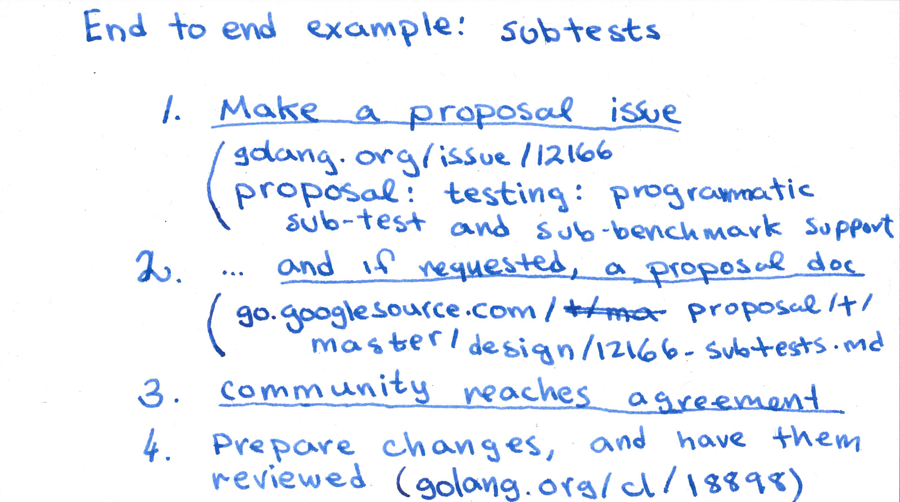
Let’s go through an end-to-end example of making a change to Go.
Our example will be the new subtests feature coming in 1.7.
Before each test case or benchmark would have to be written as its own function. So there’d be one benchmark for each combination of input string length and regular expression. This feature allows us write multiple benchmarks in the same function. It’s pretty nifty.
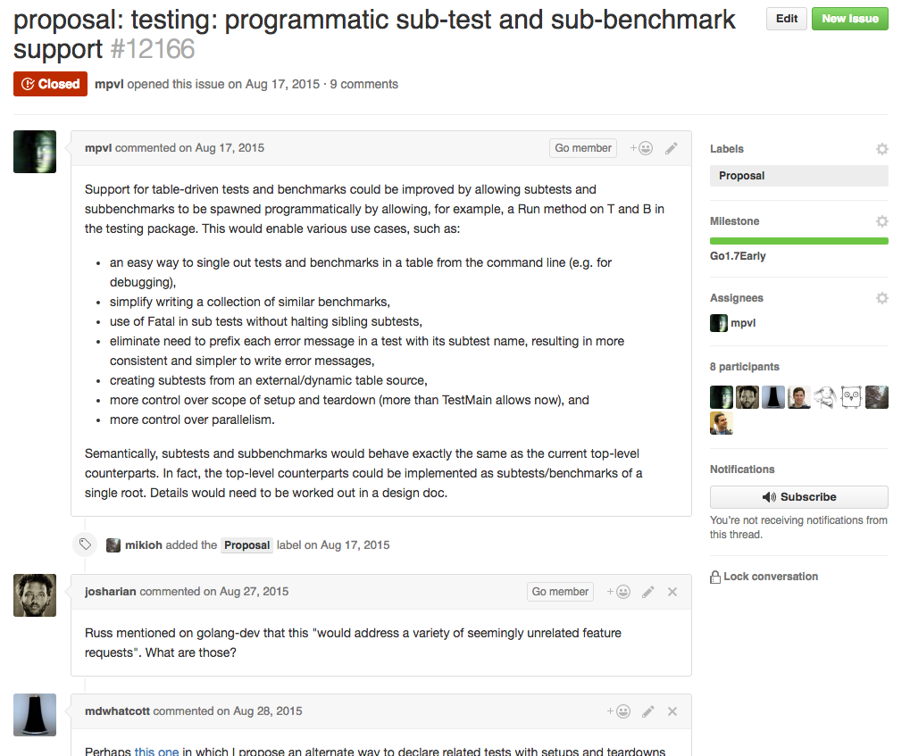
This feature was contributed by Marcel, one of our contributors, who has the github handle mpvl.
Let’s take a look at the steps Marcel went through to add this feature.
First, Marcel makes a proposal issue.
This is the Github issue page where the proposal was made.
The proposal issue contains a description of the feature and a rationale for the feature.
By the way, that golang.org link at the bottom is a convenience link that redirects to github.

Then, since this is a pretty major feature, we put together a proposal document.
Proposal documents are sent as markdown files and checked into the ‘proposal’ repo. This is what the checked in proposal looks like as rendered by Github.
This document has sections introducing the problem being solved with the change, a through description of the change being proposed and how it solves the problem, an exampination of alternatives, and an implementation strategy.
The discussion of the change continues on the code review of this doc and on the git hub issue. Eventually consensus is reached on the issue. Now Marcel can start writing code for the implementation.
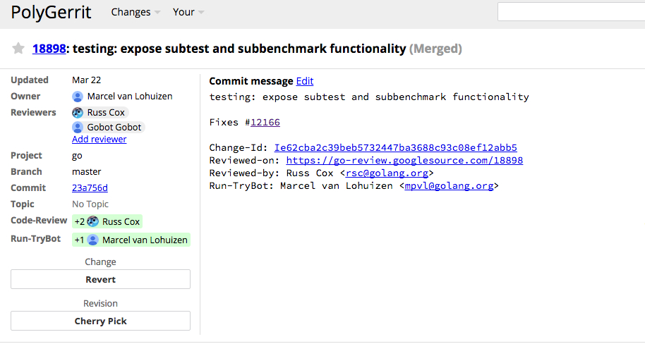
And then, send changes, this feature required a number of changes, this is just the last one. Notice the +2 approving the change to be submitted.
This is the main gerrit codereview page for this particular change. We have a special golang.org/cl link that redirects to the change.
Oh, and I’m showing you the newer gerrit UI, called polygerrit. You can follow that link over here to toggle it on.

Here’s an example of what codereview looks like. Marcel sent out the change, Russ wrote a comment (on the comments) and then Marcel updated a new version of the change respondig to the comment.
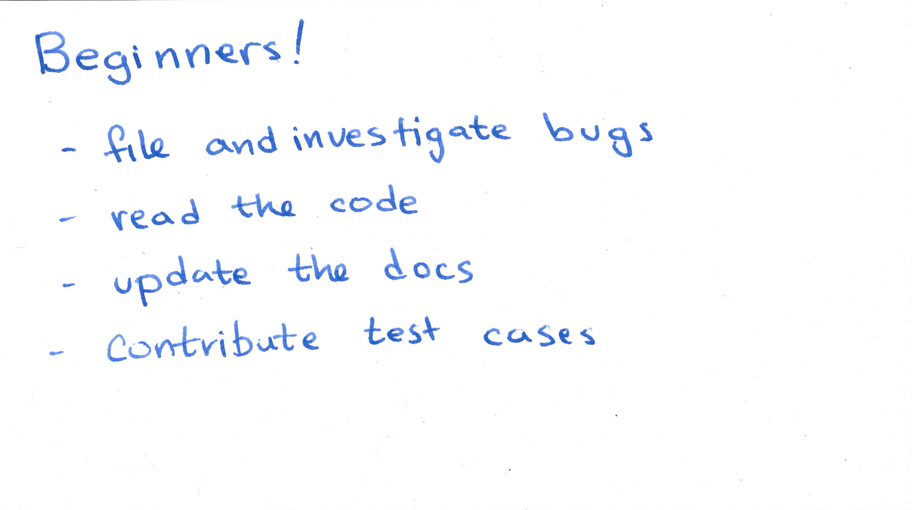
If you’re a beginner contributor to the Go project we’d recommend starting by filing bugs, updating docs, or adding test cases.

You probably won’t go hunting for bugs when you’re a beginner, because bugs often show up when you least expect it. But if you do encounter a bug, we’d love a report. And there’s no harm in filing duplicates! So even if it seems like we must have already seen a bug, you can send the report anyway!
To file a bug, go to golang.org/issue/new, which will pop up a form with prompts for details about your issue.
And if you see a bug already in the tracker, but don’t know how to fix it, you can still help! Investigating and clarifying bugs is extremely helpful. Creating a test case or reproduction for a bug, (or minimizing a complex one) is a huge help in getting it fixed.

No nit is too small when it comes to our docs. If there’s anything that’s not clear, either in godoc comments or the documentation on golang.org, Just make a change to the go git repository and send it to us.

By the way, the documentation on golang.org is contained in the go repository in the ‘doc’ directory. You can see golang.org/docs on the left side of this slide.
On the right side of the slide, you can see our wiki. It’s on github, and it’s open to edits by any github user. Go to golang.org/wiki and click the edit button to make changes there…

Another good way for a beginner to get involved is by contributing test cases. Or benchmarks -- they’re kind of like test cases…

So… I’ve recently been working on a change to the regexp package. It’s a port of the fast (but complicated) RE2 DFA matcher to Go. [slide regexp change] But there were three [sic] problems: first-- I didn’t have my work done in time before the freeze (more on the freeze later) and second-- I didn’t have enough of a justification that the complexity was worth it.
One way of doing that is to demonstrate an improvement on the benchmarks, but the benchmarks that are currently checked in are pretty easy for the current NFA matcher… Let’s try checking in something a bit harder…

Such as this one from the C++ RE2 regular expressions implementation… Oh look, “NFA execution will be particularly slow”… just what we need!
Don’t worry too much about the C++ code on this page. The important part here is the string containing the regular expression. We’ll be able to copy it straight into the Go regular expressions benchmarks.

Let’s add that benchmark to the Go regular expressions benchmark suite. The change I’m going to make is to add that fanout testcase to the regexp benchmark we saw earlier.
Okay, let’s start… I’ll assume that you’ve already installed Go using one of the installers you can download on “golang.org/dl”. On my Mac, that puts the Go tree in /usr/local/go. Okay, let me set up my shell environment
export EDITOR="code"
export GOPATH="$HOME"
export GOROOT_BOOTSTRAP=/usr/local/go
PATH="$GOPATH/bin:$PATH"
So I’m setting my EDITOR env variable and I’m also setting my GOPATH to $HOME, both of which are personal preferences. I’m also setting this special GOROOT_BOOTSTRAP environment variable. This is only necessary if you want to build the Go compiler toolchain or standard library in the core repository. The Go compiler toolchain is built using Go and we need to have an already existing go installation at GOROOT_BOOTSTRAP to do the building. I’m also adding the my GOPATH’s bin directory to my path. We’ll be go getting some tools that will help us with the contributing process. But first, let’s get the code we’re going to hack on.
It’s available at the go git repository at go.googlesource.com. Let’s git clone it. I’m just going to put it in my home directory.
git clone https://go.googlesource.com/go
Okay, now let’s build it. We’ve got a script called “all.bash” in the src directory that builds and tests the go tree. It’s a good idea to run it after downloading the tree to make sure everything’s in working order
pushd go/src
./all.bash
All right, this is going to take a while! Now let’s get those tools!
go get -u golang.org/x/review/git-codereview
Let’s also install some shortcuts in git. These will make it a little easier to use the codereview tools we just installed…
$EDITOR .gitconfig
[alias]
change = codereview change
gofmt = codereview gofmt
mail = codereview mail
pending = codereview pending
submit = codereview submit
sync = codereview sync
Great…
Let’s check back on our build…
< blah blah>
Ok, now let’s make the change.
First I’m going to use git change to make a new branch and switch to it…
git change fanout
The file we’re changing is regexp/exec_test.go
(add the following code)
{"Fanout", "(?:[\\x{80}-\\x{10FFFF}]?){100}[\\x{80}-\\x{10FFFF}]"}
great!
Now let’s test things
So we want to run the regular expressions tests and benchmark. Usually, we use
go test regexp
to run the regular expressions tests and benchmarks. But the go tool has embedded within it the path to its source code, so go test regexp is going to run the tests for our stable go installation
What we want to do here is to use the version of go we’re hacking on. all.bash puts the built go binary in $HOME/go/bin/go. Let’s check its version
$HOME/go/bin/go version
Cool. And
$HOME/go/bin/go test regexp
will run the regexp tests
Alright. Let’s run the new benchmarks
go test regexp -run None -bench BenchmarkMatch$/Fanout
This command tells the testing tool to not run any tests, and to only run the fanout benchmarks. It uses the new subbenchmark matching functionality added by Marcel.
cool!

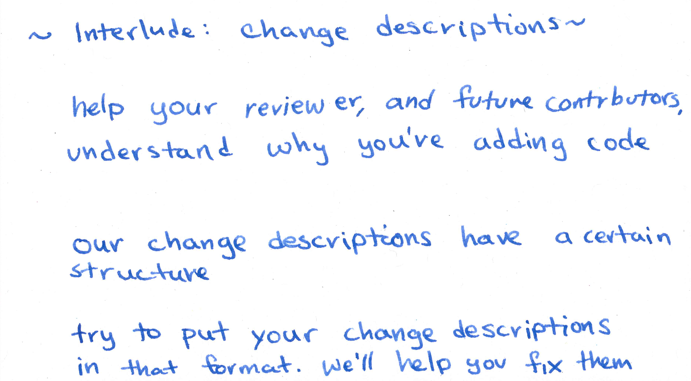
We use change descriptions to communicate both to our reviewer and to future contributors. Our reviewer wants to understand what the change is adding as context when reviewing the change. A future contributor may want to understand why a certain change was made.

Let’s take a look at the structure of a change description:
(by the way, this is what the change looks like on googlesource.com)
The path we’re making the change to. This is the subdirectory of src in for the core repo.
Then there’s a short summary that explains what the change does.
Of all the parts of the change description this line is the most important part.
After that, we provide more details about the change.
Finally, if the change has a related github issue (and it should unless the change is really simple), we reference it.

We’ve got some magic that links between changes an issue. If a change mentions an issue, gopherbot will post a comment on the change, and when a fixing change is submitted, gopherbot will close the issue.
Just to stress the importance of the first line of the change description, here’s an example of what not to do.
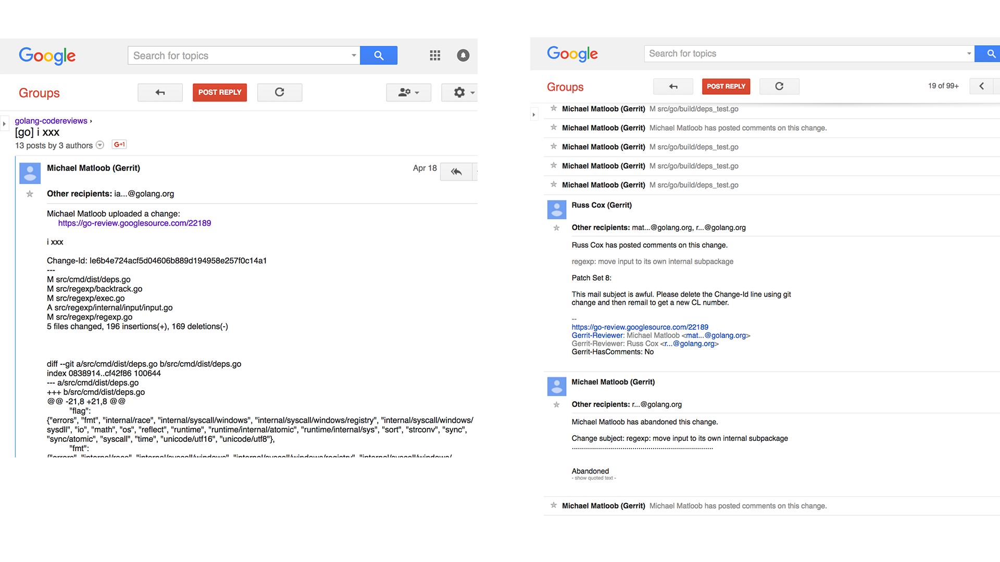
I was once hacking on a change and set the subjuct line to “i XXX” with the plan to go back and revise it before sending it out. But I “git mail”ed it before fixing the subject line, and all the emails sent out for the change had the subject “i XXX”…, even after I changed the commit message. A bunch of people were annoyed by this…. And I had to scrap the change and send a new one out that had a reasonable subject line… Once you send out your change for review, the email subject line is fixed.
Ok. Back to the demo.
Let my write my description…
regexp: add the Fanout benchmark
This is a copy of the "FANOUT" benchmark recently added to RE2 with the
following comment:
// This has quite a high degree of fanout.
// NFA execution will be particularly slow.
Most of the benchmarks on the regexp package have very little fanout and
are designed for comparing the regexp package's NFA with backtracking
engines found in other regular expression libraries. This benchmark
exercises the performance of the NFA on expressions with high fanout.

Ok we’re almost ready to get this change reviewed. Two more things:
First, we need to generate a cookie to communicate our identity to the codereview tool
I’m going to skip demoing this part since the page generates a key that’ll let you submit changes as me. But let’s take a look at the process.
Go to go.googlesource.com and log in. Then click “generate password”. That will take you to a page with some code you can paste into your shell to add the key.
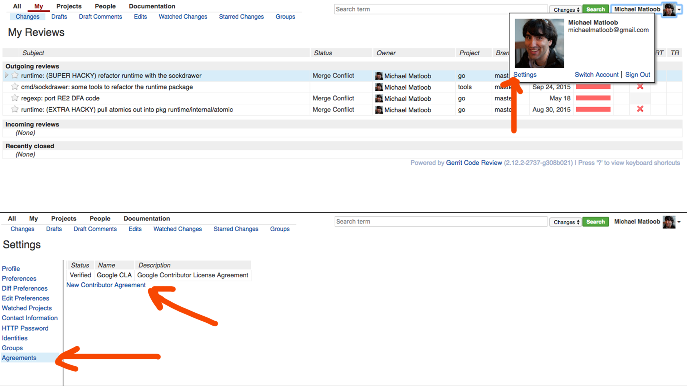
We’d also need to file a Contributor License Agreement granting the Go project a copyright license to redistribute your code. git mail will ask you to do that if you haven’t yet. Here’s how to get to the agreement… golang.org/cl Here’s what it looks like. [[slide]].
Now, I’ve already got a CLA, but git mail still needs to know who I am before letting me send out my change.

Ok.
The next step is to get our change code reviewed.
In the code review process, you and your reviewers (who are contributors like you) work together to improve your change.
The reviewers examine and approve every change we make to our source code. If they think something needs to be changed, they’ll post a comment on your change, and you can respond to comments and make changes in future revisions.
Multiple rounds of review are normal, even for small changes. And don’t forget to run gofmt and the tests every time you upload your review.
Reviewers will also use the gerrit scores we saw earlier to allow a change to be submitted or to block it. These scores help ensure that there’s agreement on the change that’s being made before it’s submitted.
Remember, they’re scoring the change, it’s not personal.
Let’s mail our change out:
git mail
Once your reviewer is happy with your change, they’ll give you a ‘+2’ on your commit. That means they think your change is ready to be submitted.
And with all that done, your change will be ready to be submitted! While you’re a beginner contributor you’ll have to ask your reviewer to submit your change for you. (We’ll give you committer rights once we’re sick of submitting your changes for you :) )
When you’re contributing, you might find that no one responds to your changes. If that happens, your best bet is to send a friendly ping on the change. The same goes to issue requests.
It happens that changes fall through the cracks -- we aren’t deliberately ignoring you! So just ping the change to surface it.
On the other hand because people are busy, you might need to wait a day or two before getting a response to your change or comments. It’s best to give your reviewer some time to respond before pinging.

Okay, so we’ve talked about making simple contributions… let’s talk about more complex changes:
Any work more complicated than what we’ve already mentioned generally requires an bug tracker issue that’s been accepted, and in even more involved cases, a proposal.
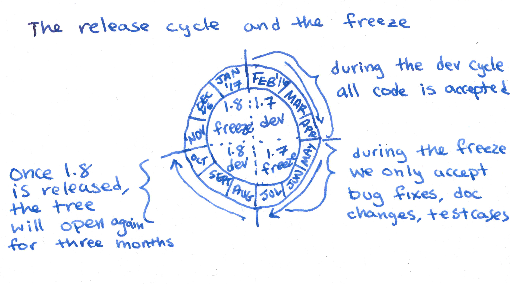
And another thing: we’ll accept bug reports, doc changes and small tests and benchmarks year round, but you should be mindful of the Go release cycle if you’re contributing code or doing anything more complex, especially on the core go repository.
Each Go release is about 6 months long. The Go tree is open for development for the first three months of the cycle, and enters the freeze for the second three months. During the freeze, we’ll generally only make changes to fix major bugs or regressions introduced during the development phase. We’re currently in the freeze for the 1.7 release cycle. When 1.7 is released in August, the tree will thaw and the 1.8 development phase will begin.
The tree will then be open for general contributions for three months, after which the 1.8 freeze will begin.
If you’re itching to make a change, you can still send it out and add the comment “R=go1.8”, but it won’t be looked at and can’t be submitted until the thaw.
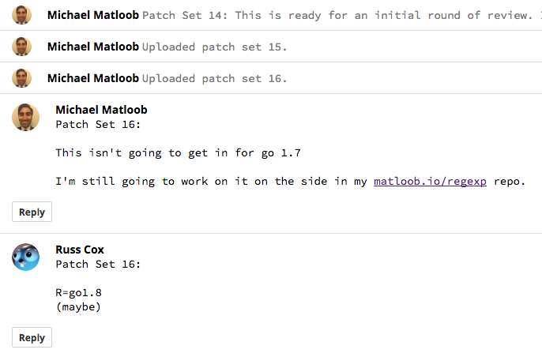
Here’s a R=go1.8 example. I didn’t finish my regexp work in time, so we added a comment with the text “r=go1.8” to indicate to our tools and contributors that this change should be ignored till the thaw.

If you see an open issue with no assignee you should feel free to take it on. Comment on the issue to let people know that you’re working on it so we can avoid having people do the same work twice. Then send in your change as before.
It’s ok if you’ve volunteered to fix an issue, but find that you don’t have the time. But if that happens, remember to send another comment letting people know that the change is open for a new assignee…
Once you have a fix, send it to us. Most changes should include tests, especially if you’re fixing a bug!

If you want to make a change introducing new behavior or features to the runtime and compiler, standard libraries, tools, or subrepos, start by filing an issue.
The project contributors will review the issue and make a decision to accept the proposal, reject it, or ask for a proposal document. Discussion will continue on the issue tracker until a decision is made.
Aside: The language is more or less frozen and language changes must be small, focused, and address a significant need in the ecosystem.
TODO: make a proposal? I’m thinking that I can file a proposal for tagging goroutines with profiler tags.
In contrast, much of the new work that’s being done is more behind the scenes: for example optimizations and bugfixes in the the standard library, GC improvements in the runtime, refactoring and the SSA backend in the compiler, and vendoring support in the tools and, there’s a lot of work that’s being done in the subrepos.

And now, some tips for reviewers.
One of the most helpful ways to contribute to the Go project is by reviewing changes. You can actually start reviewing changes even before you become a committer. And even if you’re not familiar with the codebase, there are a few things most contributors can help point out in reviews:
Don’t be afraid to say “I don’t understand this function”. It might cause the author to provide a good explanation in a comment, or better still, to simplify the code. (We love simple code!)
You can suggest improvements to change descriptions. Remember that descriptions have a particular format
You can suggest code style improvements. All new code added to the go project must should follow the guidlines in ‘Effective Go’, and the style advice collected in the ‘Go review comments doc’ at golang.org/s/style.
All non-trivial changes should point back to the GitHub issue they’re addressing. Proposals should be approved before work starts on them
It’s okay to be picky; but when you are, acknowledge that you are. Sometimes people feel like they’re being blocked, when really you’re just addressing a small quibble that is ultimately not a big deal.
And don’t forget, anyone can make review comments on changes. You don’t need to be a committer to help out with reviews.

Our contributors come from many different backgrounds and have different motivations for contributing to the project. So everyone’s path is going to be different… but let’s take a step back and look at an example of a progression of involvement on the project:
If there’s a particular part of the project that you’re interested in, start by reading the code. If you’re confused, that might be an opportunity! It might mean that there are missing test cases or documentation. Look for bugs in the github issue tracker that are relevant to that part and try to fix them. Once you’ve fixed a number of issues and start becoming more familiar with the code base, you might get some ideas for changes you want to make and things you want to fix, so you might start making suggestions to the issue tracker or filing proposals. And you might start watching for changes done in the directory and adding review comments.
Eventually, we’ll get tired of submitting your changes for you and we’ll make you a committer, so you can submit them yourself. But you’ll also be able to grant “+2”’s to other changes, approving them to be submitted, and to submit changes for new contributors. At this point you might become active in reviewing changes to that part of the codebase.

Remember: this is true for every contributor, but especially for advanced contributors. You’re representing the go community. Remember to be nice!
And of course,

Thank you to ALL our contributors for your contributings! Y’all make our project great!
Thank you to ALL our reviewers for the time you spend reviewing. The work you do in improving our code quality and teaching our contributors is invaluable!